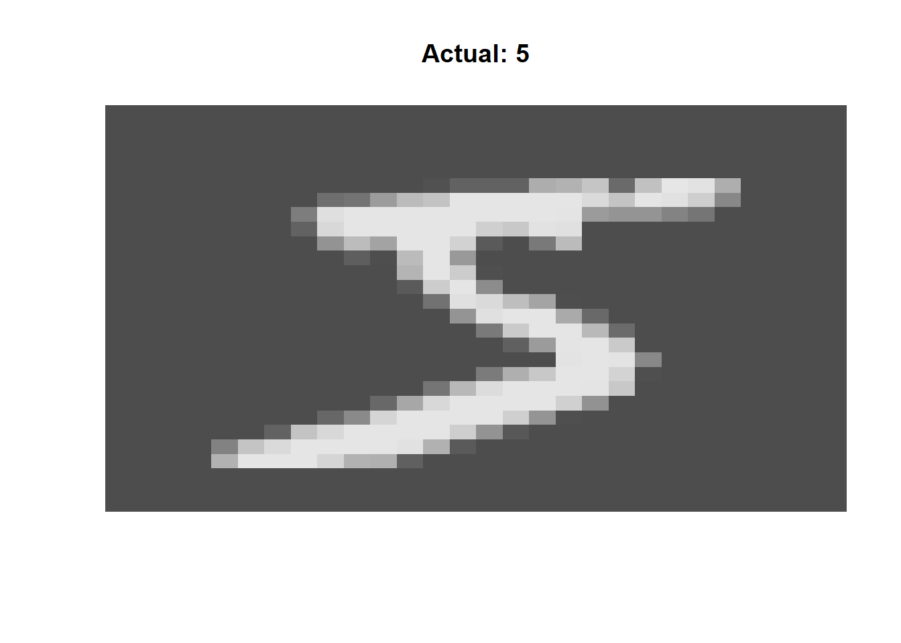
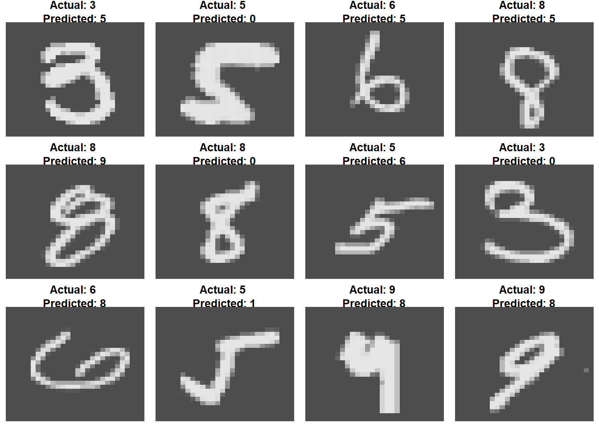
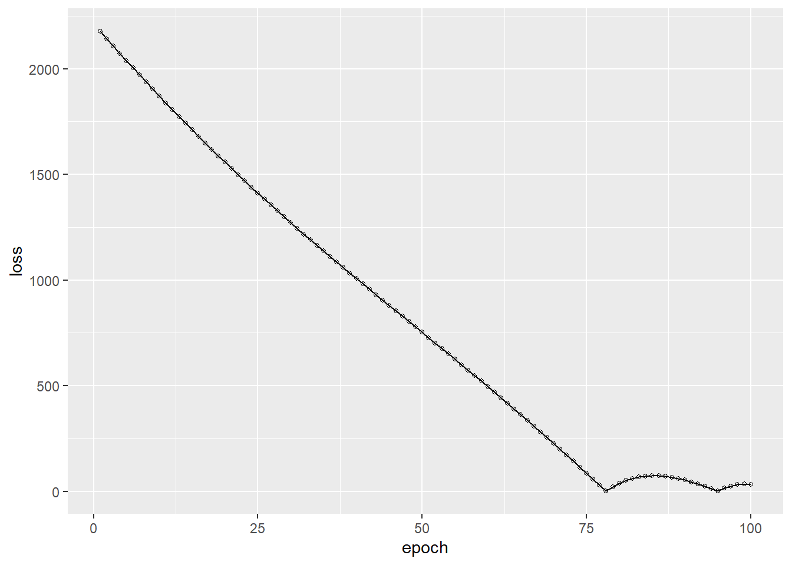
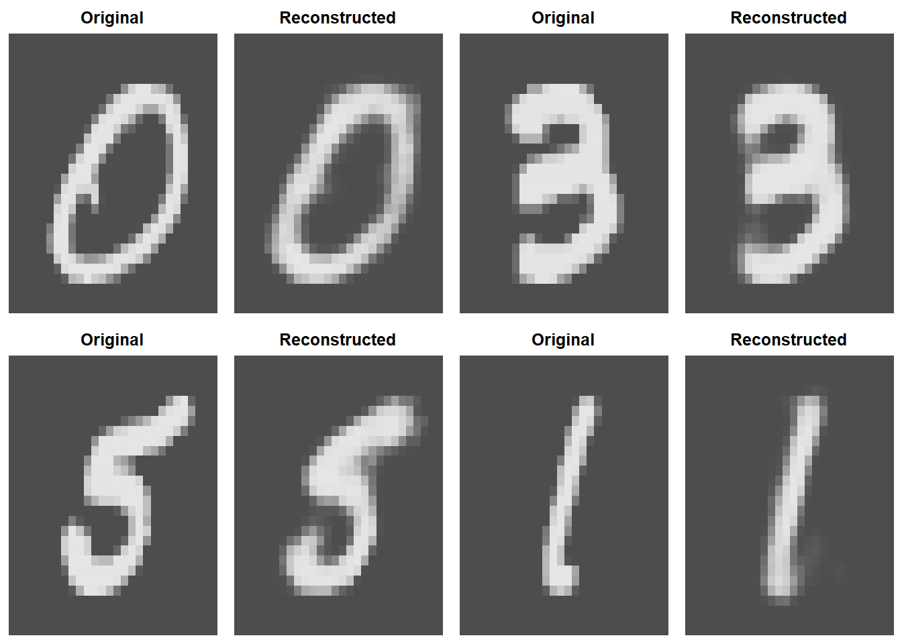

df_url = "https://raw.githubusercontent.com/jmayberr/math133-stat-learning-fall2026/refs/heads/main/Datasets/mnist_train.rds"
mnist_df = readRDS(url(df_url))Module 7.3: Check out these apples!
Introduction
This section will close out our brief tour of deeper learning models by discussing image detection and compression, two important applications which pull us deeper into the realm of neural networks1.
The MNIST Dataset
For our applications, we’ll be using the Modified National Standards and Technology (MNIST) dataset which contains greyscale intensities for 60,000 different 28x28 pixel images of handwritten digits 0-9. You can load this by downloading the mnist_train.rds file from github and loading it into R using the readRDS function2.
Each row contains the [0,1] greyscale values for the image written as a \(28 \times 28 = 784\) list of numbers as well as the actual digit classification (0,1,2,etc.) for the image. You can view one of them by “unravelling” the image values as follows:
img1 = matrix(
as.numeric(mnist_df[1, 1:784]),
nrow=28,
ncol=28
)
image(
t(img1[28:1, ]),
col = gray.colors(256),
axes = FALSE,
useRaster = TRUE,
main = paste(
"Actual:", mnist_df$digit[1]
)
)
You have to reverse the order of the rows because it is stored with the first row representing the top of the image but the image function treats the first row as the bottom.
Our first task will be to build a simple neural network which can predict the digits from the pixels using nnet. We’ll select a sample of just 1000 images for our training set and 500 for test just to speed things up. Please do feel free to try a larger version if you’re bored
set.seed(1123)
n=nrow(mnist_df)
N=1000
indices = sample(n,N+500)
train = mnist_df[indices[1:N], ]
test = mnist_df[indices[(N+1):(N+500)], ]library(nnet)
digit_nnet=nnet(digit~.,
data=train,
size=10,
MaxNWts=8000,
trace=FALSE)We didn’t use the MaxNWts input before but need it here because the default is to restrict the network to 1000 weights. With 784 inputs, 10 hidden units, and 10 possible outputs (0-9), we have \[
(784+1)\times 10 = 7850
\] weights going from the inputs to the hidden layer (the “+1” for the bias) and \[
(10+1)\times10 = 110
\] going from hidden to output; see the theory supplement for further details about weights.
Now let’s look at the predictions on the test set
yhat=predict(digit_nnet,newdata=test,type="class")
sum(test$digit==yhat)/500[1] 0.76Considering how shitty the handwriting is on some of these, that’s not bad. For instance, let’s look at a few of the incorrect ones.
# Find incorrectly classified observations
incorrect = which(yhat != test$digit)
# Select the first 12
incorrect_12 = incorrect[1:12]
# Set up plotting grid
par(mfrow = c(3, 4), mar = c(0.5, 0.5, 2, 0.5))
for (i in incorrect_12) {
img = matrix(
as.numeric(test[i, 1:784]),
nrow = 28,
ncol = 28
)
image(
t(img[28:1, ]),
col = gray.colors(256),
axes = FALSE,
useRaster = TRUE,
main = paste(
"Actual:", test$digit[i],
"\nPredicted:", yhat[i]
)
)
}
par(mfrow = c(1, 1))Some of those ARE pretty bad but I feel like we could do better. One thing we can do is increase the size of our training data. I tried the running the same code above with 10,000 training examples and did get closer to 90% accuracy. But for additional power, we need to be able to fine tune our network architecture and that requires introducing the torch package.
Building the fire
Let’s start with a warm up example on the familiar election dataset, using outcome (red/blue) as the response3. First, we’ll load it up and define training/testing sets
df_url="https://raw.githubusercontent.com/jmayberr/math133-stat-learning-fall2026/refs/heads/main/Datasets/election2016.csv"
election2016=read.csv(df_url)
s=sample(50,30)
train=election2016[s,]
test=election2016[-s,]Hopefully by this point you have caved and decided to watch at least the a few videos of 3blue1brown’s series and/or read the theoretical supplement because its about to get real hot if not. In particularly, you’ll need to have at least a vague notion of the following terms to understand what’s going on here:
- activation funtions
- cost functions
- back-propagation
The torch package is a much more comprehensive and modern toolbox for fitting neural networks to data. It is capable of fitting multilayer feedforward networks with as many hidden units as we like. It starts with a definition of our model architecture. We’ll start with a two-unit single hidden layer network and ReLu activation function4.
library(torch)
outcome_nn=nn_sequential(
#Define input to hidden layer dimensions
nn_linear(8,2),
nn_relu(),
# Hidden layer to output (two nodes for binary response)
nn_linear(2,2)
)Now the annoying part. We have to redefine all of our training and testing sets as “tensors5.”.
x_train = torch_tensor(
as.matrix(train[, 2:9]),
dtype = torch_float()
)
x_test = torch_tensor(
as.matrix(test[, 2:9]),
dtype = torch_float()
)
# Convert outcome to 1/2 factor - default for torch
outcome_levels = levels(factor(election2016$outcome))
y_train = torch_tensor(
as.integer(factor(train$outcome,
levels=outcome_levels)),
dtype = torch_long()
)
y_test = torch_tensor(
as.integer(factor(train$outcome,
levels =outcome_levels)),
dtype = torch_long()
)This code should be pretty self-explanatory except maybe the conversion of outcome to a factor and then integer. That’s tedious but its just the format needed to make to work with torch.
Now we need a couple additional definitions. First, the type of loss/cost function we will be minimizing. Using squared errors doesn’t work very well for classification problems so here we use cross entropy6.
Second, the optimizer part tells torch what algorithm to use for minimizing the loss via backpropagation. In this case, we set this equal to “Adam’s” algorithm7. In contrast, nnet uses a different optimizer called BFGS8.
model = outcome_nn
loss_fn = nn_cross_entropy_loss()
optimizer = optim_adam(
model$parameters,
lr = 0.001
)Then we get to the training step where we apply gradient descent to the loss function. The algorithm starts off by randomizing the network weights and then calculates the loss function and gradient for our training data. It proceeds by applying one step of gradient descent to adjust weights, and then starts the whole process again. Each iteration is called an epoch.
The code below runs through 100 epochs and plots the resulting loss function so we can check convergence.
epochs = 100
loss_history = data.frame(
epoch = 1:epochs,
loss = NA
)
for (epoch in 1:epochs) {
# Reset gradient from previous epoch
optimizer$zero_grad()
# Compute current model output
output = model(x_train)
#Compute current model loss
loss = loss_fn(output, y_train)
# Compute current loss gradient via backpropagation
loss$backward()
# Perform one step of gradient descent
optimizer$step()
# Store loss
loss_history$loss[epoch] = loss$item()
}
loss_history |>
ggplot(aes(x=epoch,y=loss))+
geom_point(shape=1,size=1)+
geom_line()
Observe how the loss starts to level off as we approach 100. That’s good! If it doesn’t we should try more epochs.
Finally we get to the good part: prediction. The only hard part about this is that we need to do it in three steps
- Calculate the predicted output of the model (which will be in terms of log-odds of getting a 1 or 2 as output)
- Extract the column which leads to the largest value
- Convert back to red/blue classifications
The following shows a confusion matrix of the results:
test_output=model(x_test)
pred_levels=as.array(test_output$argmax(dim=2))
yhat = outcome_levels[pred_levels]
table(test$outcome,yhat) yhat
Blue
Blue 8
Red 12Haha, not so good; we always predicted red! Well, this was just warmup anyways. Now to the main event.
Light `em up
For our digit prediction model, we will use a more complicated architecture consisting of two hidden layers, each with 128 hidden units9 and ReLu activation functions:
library(torch)
digit_nn=nn_sequential(
# Input to first hidden
nn_linear(784,128),
nn_relu(),
# First to second hidden
nn_linear(128,64),
nn_relu(),
#Second hidden to output
nn_linear(64,10)
)Now the annoying part again. Note that we have to redefine our train/test set first because of the warmup example.
n=nrow(mnist_df)
N=1000
indices = sample(n,N+500)
train = mnist_df[indices[1:N], ]
test = mnist_df[indices[(N+1):(N+500)], ]
# Convert pixel values to tensors
x_train = torch_tensor(
as.matrix(train[, 1:784]),
dtype = torch_float()
)
x_test = torch_tensor(
as.matrix(test[, 1:784]),
dtype = torch_float()
)
# Convert digit labels to integers 1 through 10
y_train = torch_tensor(
as.integer(as.character(train$digit)) + 1,
dtype = torch_long()
)
y_test = torch_tensor(
as.integer(as.character(test$digit)) + 1,
dtype = torch_long()
)The “+1” stuff at the end is again a formatting issue; torch expects class labels starting at 1 instead of 0 and our digits are labeled 0-9
Next the model and loss (same as before):
model = digit_nn
loss_fn = nn_cross_entropy_loss()
optimizer = optim_adam(
model$parameters,
lr = 0.001
)And then training. Now you might be wondering what’s up with the whole epoch and batch-size thing10 below. Mini-batch gradient descent is a training method in which we split the data into smaller chunks called batches. After randomizing the initial weights, we use the first batch to calculate the loss function and perform a step of gradient descent to update the weights. We use the update weights to calculate the loss and perform another gradient descent step using the second batch and so on until we have gone through the entire training set.
Smaller batch sizes make things more computationally manageable for larger dataset and let us update weights more frequently. This additional variability in gradient estimates can lead to a more thorough exploration of parameter spaces, potentially improving generalization. We didn’t need it in our warm-up example and you usually don’t if you have less than 1000 observations, but we’ll use it here in case you want to try upping the training set size.
After the algorithm uses all batches, an epoch ends. Then we reshuffle the observations into batches all over again and start the second epoch using the weights from the end of the previous epoch as its starting values.
The code below performs these training steps. You can basically copy and paste it for reuse in other examples provided you change the model and training/testing data appropriately.
epochs = 30
batch_size = 64
for (epoch in 1:epochs) {
# Reset loss for current epoch
total_loss = 0
# Shuffle observations for current epoch
order = sample.int(nrow(train))
for (i in seq(1, length(order), by = batch_size)) {
# Indices for current batch
idx = order[i:min(i + batch_size - 1, length(order))]
# Clears gradients from previous batch
optimizer$zero_grad()
# Calculate model output for current batch
output = model(x_train[idx, ])
# Calculate loss function for current model
loss = loss_fn(output, y_train[idx])
# Calculate gradient of loss via backpropagation
loss$backward()
# Update weights
optimizer$step()
# Update loss function
total_loss = total_loss + loss$item()
}
# Print shit to see convergence
cat(
"Epoch:", epoch,
"Average loss:", round(total_loss / ceiling(length(order) / batch_size), 4),
"\n"
)
}Epoch: 1 Average loss: 2.1069
Epoch: 2 Average loss: 1.4161
Epoch: 3 Average loss: 0.8212
Epoch: 4 Average loss: 0.5555
Epoch: 5 Average loss: 0.4366
Epoch: 6 Average loss: 0.3514
Epoch: 7 Average loss: 0.2937
Epoch: 8 Average loss: 0.2516
Epoch: 9 Average loss: 0.212
Epoch: 10 Average loss: 0.1925
Epoch: 11 Average loss: 0.1736
Epoch: 12 Average loss: 0.1388
Epoch: 13 Average loss: 0.1217
Epoch: 14 Average loss: 0.108
Epoch: 15 Average loss: 0.0915
Epoch: 16 Average loss: 0.0769
Epoch: 17 Average loss: 0.0706
Epoch: 18 Average loss: 0.0649
Epoch: 19 Average loss: 0.0541
Epoch: 20 Average loss: 0.0465
Epoch: 21 Average loss: 0.0416
Epoch: 22 Average loss: 0.0351
Epoch: 23 Average loss: 0.0321
Epoch: 24 Average loss: 0.0296
Epoch: 25 Average loss: 0.0278
Epoch: 26 Average loss: 0.0235
Epoch: 27 Average loss: 0.0199
Epoch: 28 Average loss: 0.018
Epoch: 29 Average loss: 0.0172
Epoch: 30 Average loss: 0.0153 The next code chunk does the fun part: prediction.
# Calculate predictions - basically like using predict with classes
test_output = model(x_test)
predictions = test_output$argmax(dim = 2)
# Convert predictions from 1-10 back to 0-9.
predicted_digits = as.integer(as_array(predictions)) - 1
actual_digits = as.integer(as.character(test$digit))
# Calculate test accuracy
mean(predicted_digits == actual_digits)[1] 0.876We can see we did start to get some improvements with our sample of size 1000. With a larger sample size of 10000, I was able to get 95-96% accuracy and it was much faster than using nnet too. Consider that shit torched.
One additional comment if you plan to use torch for more complicate nnet fitting. Some models behave differently in training vs evaluation mode so it is best practice to insert the command model$train() before training a model and model$eval() before calculating predictions. I left them off here for simplicity and because they don’t make a difference for the multilayer feedforward network we’re fitting but you’ll probably see them if you look up code online so now you know.
Autoencoders and Image Compression
Another application of neural networks is in image compression. The goal of this application is to take an image and encode it in a compressed format along with instructions on how to decode the compressed image back into its original format.
To train a neural network for this type of task, we feed the images as both input and output. We funnel the input through a series of hidden layers. The middle one acts as a “bottleneck” with a smal number of units (32 in the example below). The encoder part compresses the original 784 pixels into a representation of only 32 numbers (from the bottleneck) and the decoder part uses these 32 numbers to reconstruct the original image. A neural network built through this procedure is called an autoencoder.
To define an autoencoder for the digit data, we’ll start by defining our model
autoencoder=nn_sequential(
# First encoder layer
nn_linear(784,128),
nn_relu(),
# Bottleneck
nn_linear(128,32),
nn_relu(),
# First Decoder layer
nn_linear(32,128),
nn_relu(),
# Output
nn_linear(128,784),
nn_sigmoid()
)This time we will use the mean squared loss since the output (grayscale11 value) is numeric:
model = autoencoder
loss_fn = nn_mse_loss()
optimizer = optim_adam(
model$parameters,
lr = 0.001
)Now let’s redefine our training and testing sets because we are going to need more than 1000 observations to train all the weights.
n=nrow(mnist_df)
N=10000
indices = sample(n,N+500)
train = mnist_df[indices[1:N], ]
test = mnist_df[indices[(N+1):(N+500)], ]
x_train = torch_tensor(
as.matrix(train[, 1:784]),
dtype = torch_float()
)
x_test = torch_tensor(
as.matrix(test[, 1:784]),
dtype = torch_float()
)Then we’ll do the training step. The only difference from our previous code is that we use x_train when calculating the loss instead of a separate y_train for digits. In other words, we are training the autoencoder to recognize the inputs themselves.
model$train()
epochs = 30
batch_size = 64
epoch_loss = numeric(epochs)
for (epoch in 1:epochs) {
total_loss = 0
order = sample.int(nrow(train))
for (i in seq(1, length(order), by = batch_size)) {
idx = order[i:min(i + batch_size - 1, length(order))]
optimizer$zero_grad()
output = model(x_train[idx, ])
loss = loss_fn(output, x_train[idx, ])
loss$backward()
optimizer$step()
total_loss = total_loss + loss$item()
}
epoch_loss[epoch] = total_loss / ceiling(length(order) / batch_size)
cat(
"Epoch:", epoch,
"Average loss:", round(epoch_loss[epoch], 5),
"\n"
)
}Epoch: 1 Average loss: 0.08061
Epoch: 2 Average loss: 0.04291
Epoch: 3 Average loss: 0.0338
Epoch: 4 Average loss: 0.02887
Epoch: 5 Average loss: 0.0256
Epoch: 6 Average loss: 0.02326
Epoch: 7 Average loss: 0.02145
Epoch: 8 Average loss: 0.0201
Epoch: 9 Average loss: 0.01913
Epoch: 10 Average loss: 0.01826
Epoch: 11 Average loss: 0.0176
Epoch: 12 Average loss: 0.01703
Epoch: 13 Average loss: 0.01653
Epoch: 14 Average loss: 0.01618
Epoch: 15 Average loss: 0.0158
Epoch: 16 Average loss: 0.0155
Epoch: 17 Average loss: 0.01519
Epoch: 18 Average loss: 0.01494
Epoch: 19 Average loss: 0.01474
Epoch: 20 Average loss: 0.01452
Epoch: 21 Average loss: 0.01433
Epoch: 22 Average loss: 0.01418
Epoch: 23 Average loss: 0.014
Epoch: 24 Average loss: 0.01388
Epoch: 25 Average loss: 0.01371
Epoch: 26 Average loss: 0.01356
Epoch: 27 Average loss: 0.01341
Epoch: 28 Average loss: 0.01334
Epoch: 29 Average loss: 0.01323
Epoch: 30 Average loss: 0.01309 Now we’ll calculate the predictions on the test set.
model$eval()
reconstructed = model(x_test)
reconstructed = as_array(reconstructed)And then compare the first four
par(mfrow = c(2, 4), mar = c(0.5, 0.5, 2, 0.5))
for (i in 1:4) {
original = matrix(
as.numeric(x_test[i, ]),
nrow = 28,
ncol = 28
)
predicted = matrix(
reconstructed[i, ],
nrow = 28,
ncol = 28
)
image(
t(original[28:1, ]),
col = gray.colors(256),
axes = FALSE,
useRaster = TRUE,
main = "Original"
)
image(
t(predicted[28:1, ]),
col = gray.colors(256),
axes = FALSE,
useRaster = TRUE,
main = "Reconstructed"
)
}
par(mfrow = c(1, 1))They’re a little blurry but recognizable. You can choose to explore better options in the practice problems below.
Practice
Load the mnist data from github and experiment with one of the following two tasks
- How does changing the training set size or neural network architecture affect the predictive accuracy of the digits model?
- How does changing the bottleck size or other hidden layers change the reconstructed images in the autoencoder example?
Footnotes
At least it doesn’t force us to go deeper into our own neural networks. Scary.↩︎
The dataset is large enough where storing and loading it as a csv takes too much time. An RDS file is more compact.↩︎
We could also use the shots data but the issue there is the qualitative predictors.
torchdoesn’t allow you to throw them in directly. You have to create the model matrix separately and that’s an extra layer of complexity we don’t need right now.↩︎nnetuses sigmoid but ReLu is faster and better.↩︎In math, tensors are multilinear maps. In computer/data science, they are just multidimensional array. Think matrices except you can have more than two indices.↩︎
More on this in the supplement. Maybe. It hasn’t been fully written yet.↩︎
Hopefully not as depressing as Adam’s Song. Ok fine, Adam isn’t a person here. Its an acronym for ADAptive Moment estimation↩︎
Acronym for Bad Fucking GeniuS. or the initials of the researchers who came up with it, I’ll let you decide.↩︎
AI says computers like it when you choose hidden units in powers of 2. You are speaking their love language.↩︎
Which should be the name of a sitcom about two outcast aliens from different civilizations who become friends and triumph over the evil ruling Syndicate against all odds.↩︎
You’ll notice I used both American and British spellings of gray/grey in these notes. Just trying to be unbiased. Except when it comes to writing words like center or meter. We all know spelling them centre or metre is just wrong. And I’m not adding an extra “u” in color. But daemon? That’s cool. I just dont’ really have a good reason to throw the word demon into my notes that often.↩︎